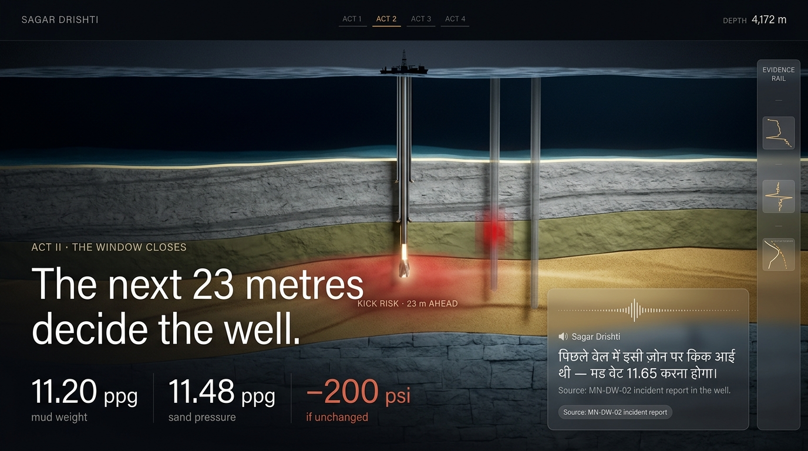
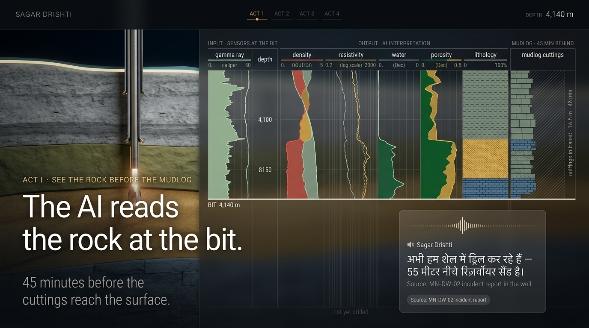
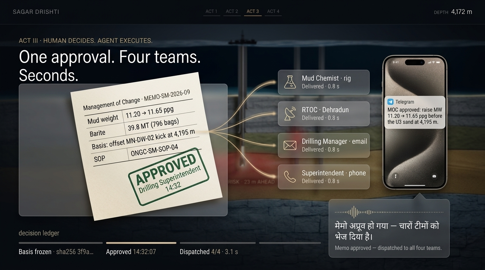
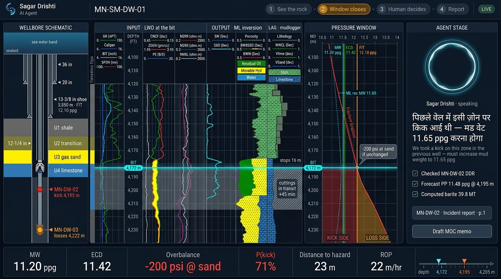
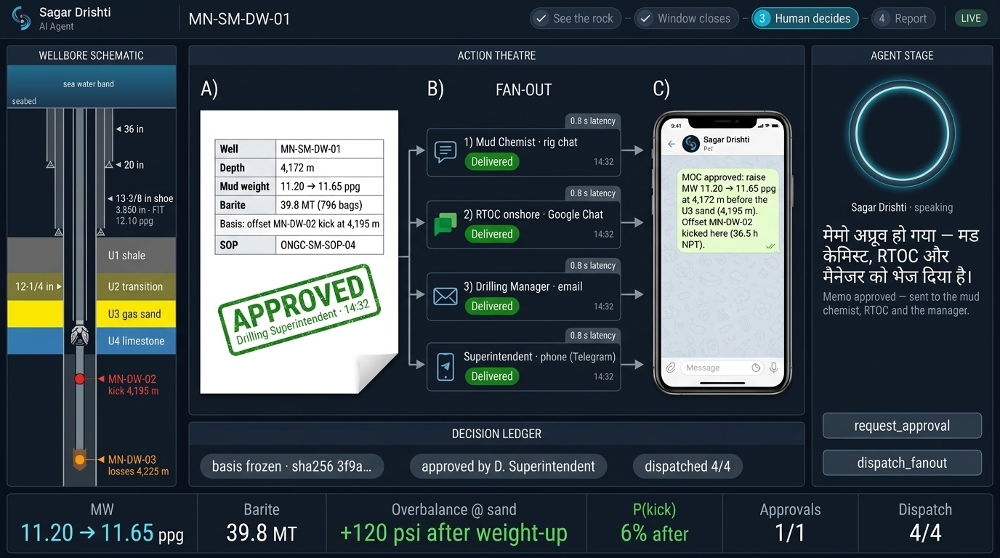

3D rock layers, well with casing, glowing bit, red risk zone 23 m ahead, offset well kick marker, agent Hindi caption.

Full log sheet (sensors → AI interpretation → mudlog 45 min behind). Numbers in the real build come from the scenario data.

Memo → APPROVED stamp → four teams → phone message.

